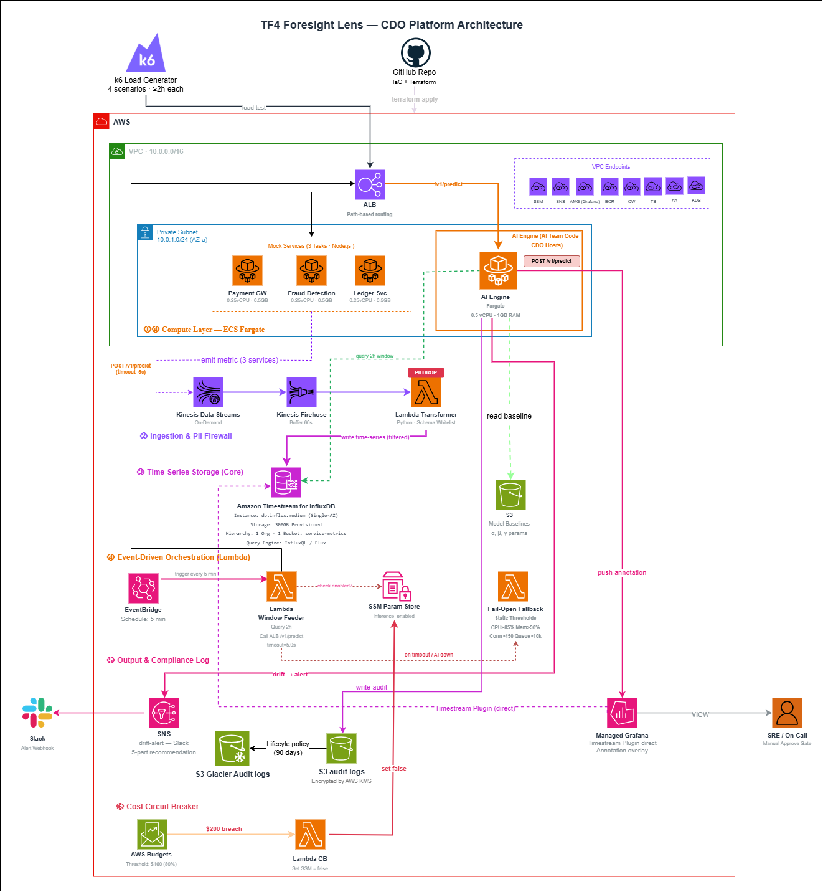
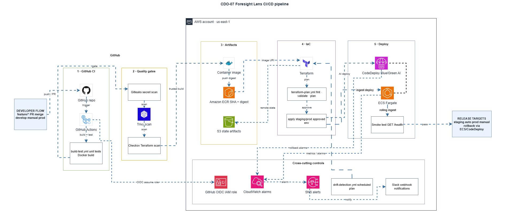

Hệ thống giám sát dự báo chủ động cho Fintech — phát hiện capacity exhaustion trước 15 phút bằng AI + Streaming + Zero-Trust.
SLO 99.9% bị vi phạm nhiều lần — không phải vì thiếu tool, mà vì thiếu dự báo sớm.
Fintech quy mô tầm trung, AWS ECS Fargate + RDS Aurora + DynamoDB + SQS + ALB. Peak traffic Black Friday.
CPU database tăng dần đến 100%, SQS backlog tích tụ, ALB connection chạm ngưỡng — không ai biết cho đến khi user gửi ticket.
SLO availability 99.9% bị vi phạm nhiều lần trong 3 tháng. CloudWatch + DataDog có nhưng thiếu baseline động.
Static threshold quá nhạy → cành báo giả tràn ngập → SRE bỏ qua → sự cố thật bị bỏ lỡ. Vòng xoáy alert fatigue.
Root Cause: Không có hệ thống học baseline động → không phát hiện được slow drift — kiểu suy giảm âm thầm, đều đặn, tích tụ thành sự cố lớn mà không kịch hoạt static threshold.
TSDB-Centric Hybrid Streaming + AI + Zero-Trust Network. Mọi thành phần được chọn có lý do rõ ràng và so sánh với alternatives.
Ingestion (thu thập) → Inference (dự báo) → Alert (cành báo). Fail-Safe ở mọi điểm.
Mock Services phát telemetry → Kinesis buffer → Lambda lọc PII → Timestream for InfluxDB. Zero data loss nhờ 24h Kinesis retention.
EventBridge (mỗi 5 phút) kích hoạt Window Feeder → truy vấn 2h metrics → AI Engine POST /v1/predict. Lead time ≥ 15 phút.
Fail-Open Fallback khi AI timeout/down. Cost Circuit Breaker ngắt inference khi $200. Không bao giờ im lặng.
Toàn bộ luồng dữ liệu và các thành phần — từ Mock Services ở biên tới AI Engine, Grafana và Slack Alert.

Mỗi lựa chọn đều có bảng so sánh alternatives — không phải chọn vì quen, mà vì số liệu và requirements.
AI Serving cần long-running, stateful, predictable latency — 3 yêu cầu loại bỏ Lambda và EKS ngay từ đầu.
| Tiêu chí | ✅ ECS Fargate (Đã chọn) | Lambda | EKS (Kubernetes) |
|---|---|---|---|
| Long-running ≥ 2h | ✅ Không giới hạn | ❌ Timeout 15 phút — block cửa sổ test ≥ 2h | ✅ Không giới hạn |
| Cold Start & Latency | ✅ Không cold start · p99 < 200ms | ❌ Cold start 500ms+ với ML libraries | ✅ Không cold start |
| Stateful Circuit Breaker | ✅ State sống trong vòng đời task | ❌ State reset mỗi invocation | ✅ Stateful |
| Ops Overhead | ✅ AWS quản lý OS, patching, host | ✅ Zero-ops | ❌ Quản lý control plane K8s phức tạp |
| Chi phí (2 tasks 24/7) | ~$67.22/tháng — predictable | Rẻ nếu ít invoke, nhưng không phù hợp | ❌ Control plane ~$73/tháng + nodes |
| Zero-ops requirement | ✅ Serverless container | ✅ Serverless function | ❌ Vi phạm — cần quản lý cluster |
Cần buffer chống spike + cô lập tenant + chi phí linh hoạt trong ngân sách $200.
| Tiêu chí | ✅ KDS On-Demand (Đã chọn) | KDS Provisioned | MSK (Kafka) |
|---|---|---|---|
| Chi phí cơ bản | ~$28.50/tháng — pay-per-use | ~$60/tháng cố định — lãng phí giờ rảnh | ❌ ~$200+/tháng — vượt budget |
| Auto-scaling | ✅ Tự động split shard khi spike | ❌ Phải tính toán shard trước | ✅ Tự scale nhưng phức tạp config |
| Multi-tenant isolation | ✅ Partition key = service_id → Hot Shard Split tự động | ✅ Cùng cơ chế | ✅ Topic per tenant — quá phức tạp |
| Ops Overhead | ✅ Fully Managed AWS | ✅ Managed | ❌ Quản lý cluster — vi phạm zero-ops |
| 24h buffer (replay) | ✅ Replay khi Transformer lỗi | ✅ 24h+ | ✅ Tunable |
| Throughput tối đa | ✅ Tự scale lên 50k events/sec | Giới hạn theo shard count | ✅ Rất cao — nhưng quá mức cần |
AI Engine cần query cửa sổ 2h với độ trễ thấp — TSDB chuyên biệt là bắt buộc.
| Tiêu chí | ✅ Timestream InfluxDB (Đã chọn) | Prometheus + EC2 | CloudWatch Custom Metrics |
|---|---|---|---|
| Query cửa sổ 2h, độ trễ thấp | ✅ Flux query < 100ms — đáp ứng AI Engine | ⚠ PromQL nhanh nhưng self-host | ❌ Nén dữ liệu sau 15 ngày — mất độ chính xác |
| Zero-ops | ✅ AWS Managed | ❌ Quản lý EC2, storage, backup | ✅ Fully managed |
| Multi-tenant isolation | ✅ Tag-based: tenant_id + service_id filter | ⚠ Label-based, cardinality cẩn thận | ❌ Chi phí tăng vọt theo cardinality |
| Grafana Plugin | ✅ Native InfluxDB datasource — direct query | ✅ Prometheus datasource | ⚠ CloudWatch datasource — kém linh hoạt |
| InfluxDB Line Protocol | ✅ Lambda Transformer ghi trực tiếp /api/v2/write | ❌ Không tấng thích trực tiếp | ❌ API riêng — không dùng InfluxQL/Flux |
| Chi phí | ~$116.40/tháng — predictable | EC2 ~$30 + EBS + chi phí ẩn ops | $0.30/1000 metrics — leo thang |
AccessDeniedException trong tài khoản capstone. Team pivot sang Timestream for InfluxDB (<1 ngày) — dịch vụ khác hoàn toàn, vẫn giữ góc độ TSDB-Centric.#4 Observability Dashboard
| Option | Zero-ops | Annotation Overlay | Cost |
|---|---|---|---|
| ✅ Managed Grafana | ✅ | ✅ AI push HTTP API | $9/tháng |
| Grafana tệ ECS | ❌ | ✅ | ~$15-20/tháng + ops |
| CloudWatch Dashboards | ✅ | ❌ Kém linh hoạt | $0 built-in |
#5 Audit Log Storage
| Option | Chi phí | Lifecycle tự động | WORR fit |
|---|---|---|---|
| ✅ S3 + Lifecycle | ~$0.79/tháng | ✅ Tự động 2 stage | ✅ Perfect |
| DynamoDB | ~$5-10/tháng | ❌ | ❌ Quá đắt |
| RDS | ~$25+/tháng | ❌ Manual snapshot | ❌ |
Không có Internet Gateway. Không có NAT Gateway. 8 VPC Endpoints. Một ngoại lệ duy nhất có chủ ý.
7 Interface + 1 S3 Gateway. Chi phí: ~$50.40/tháng — đánh đổi có chủ ý cho SOC2 compliance.
Chạy Non-VPC Lambda → nhận SNS trigger qua AWS internal → gửi HTTPS 443 ra hooks.slack.com. Không cần NAT Gateway, không phá vỡ private boundary.
tf4-cdo07-alb-sg — ALB Internal (HTTPS 443 inbound)tf4-cdo07-app-sg — ECS Tasks (HTTP 8080 từ ALB)tf4-cdo07-lambda-sg — Lambda functions (no inbound)tf4-cdo07-vpce-sg — Interface VPC Endpointstf4-cdo07-influxdb-sg — Timestream (TCP 8086)/v1/predict → AI Engine · /* → Mock Services.
EWMA+STL model zero token cost. Fail-Open Fallback đảm bảo hệ thống không bao giờ im lặng.
tf4-ewma-stl-v1inference_enabled = falseSRE review Grafana → Manual Approve Gate → Action.
Toàn bộ infrastructure-as-code qua Terraform — mọi thay đổi địu đi qua Git, tự động plan/apply/validate trước khi lên production.

terraform plan + tflint + Checkov → manual approve → terraform apply. Branch protection: 1 Tech Lead approval bắt buộc trước merge vào main.Run-rate lý thuyết đầy đủ là ~$305/tháng, nhưng nhờ mô hình Pay-per-use, chi phí thực tế kiểm thử 2 tuần nằm an toàn dưới ngưỡng $165.
| Service | Chi phí/tháng | Lý do chọn |
|---|---|---|
| ECS Fargate (AI + 3 Mocks) | $67.22 | Long-running, stateful, zero-ops |
| Timestream for InfluxDB (db.influx.medium) | $116.40 | Native InfluxDB API, Zero-ops, Grafana Plugin |
| VPC Endpoints (8 endpoints) | $50.40 | SOC2 compliance, Zero-Trust, không cần IGW/NAT |
| Kinesis Data Streams (On-Demand) | ~$28.50 | Pay-per-use, auto-scale, tiết kiệm >50% vs Provisioned |
| ALB Internal | $21.96 | Path-based routing, health check, single entry point |
| CloudWatch Logs | $6.10 | Centralized logging, 8 alarms |
| Amazon Managed Grafana | $9.00 | Zero-ops, Timestream Plugin, AWS SSO native |
| Lambda + EventBridge | $4.50 | Window Feeder, Transformer, CB, Fail-Open |
| S3 + Glacier, ECR, SNS, Budgets | ~$1.80 | Audit log, container registry, alerts |
| Total Run-Rate | ~$305.38 | Lý thuyết 1 tháng đầy đủ |
Kiểm tra từng tiêu chí kỹ thuật đã được đặt ra từ đầu.
| NFR | Target | Cách đáp ứng | Status |
|---|---|---|---|
| Multi-tenant | ≥ 3 tenant | payment-gw, ledger-svc, fraud-detection · partition key isolation | ✅ Đạt |
| SLO p99 latency | < 1000ms | ECS Fargate không cold start, VPC Endpoints nội bộ, p99 thực tế < 200ms | ✅ Đạt |
| Availability | ≥ 99.5% | ECS auto-restart <30s, Kinesis 24h retry, Fail-Open Fallback <1s RTO | ✅ Demo 99.5% |
| Lead time dự báo | ≥ 15 phút | Cửa sổ 2h + EWMA+STL → phát hiện drift sớm | ✅ Đạt |
| Cost cap | ≤ $200/tháng | Kinesis On-Demand + Cost CB set SSM flag tại $200 | ✅ An toàn |
| Onboarding SLA | < 30 phút | Quy trình 5 bước chuẩn, smoke test verification | ✅ < 30 phút |
| Fail-open fallback | Static threshold | Lambda Fail-Open Fallback và CloudWatch metrics, RTO <1s | ✅ Đạt |
| Security baseline | IAM + KMS + audit | 5 SGs, 8 VPC Endpoints, KMS CMK, S3 lifecycle, SSE-KMS | ✅ SOC2/GDPR/PCI-DSS |
So với giải pháp truyền thống tự vận hành — 4 trục đo lường không thể tranh luận.
| Trục đo lường | CDO-07 Foresight Lens | Self-Hosted Traditional |
|---|---|---|
| Ops overhead (giờ/tuần) | 0 giờ — Fully Managed Services | 8-12 giờ (OS patching, DB scaling, cluster management) |
| Lead time dự báo | ≥ 15 phút — Cửa sổ 2h + TSDB nhanh + AI Engine | Reactive — phát hiện sau khi sự cố xảy ra |
| Bảo mật mạng | 100% Zero-Trust — 8 VPC Endpoints PrivateLink, không IGW/NAT | Dễ rò rỉ qua Public IP hoặc NAT kém bảo mật |
| Chi phí ngân sách $200 | Tuân thủ — Cost CB tự ngắt tại $200 hard limit | Khó kiểm soát, dễ ló ngân sách do chi phí ẩn EC2/EBS |
Phát hiện drift trước 15 phút — không phải sau khi user gửi ticket. Static threshold chỉ báo khi đã quá muộn.
Fail-Open tự kích hoạt. Cost CB tự ngắt. Kinesis buffer tự retry. Không cần người trực 24/7.
Multi-tenant partition key isolation. Onboarding <30 phút. Mở rộng thêm tenant không cần thay đổi hạ tầng lõi.
Không phải hệ thống giám sát thông thường — mà là đôi mắt biết nhìn về tương lai cho hạ tầng Fintech. Zero-Trust · Zero-Ops · Self-Healing · SaaS-Ready.